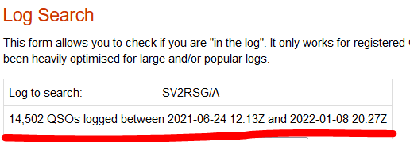

It's more work than *I* am interested in doing;
though some would be more than one per card... And more total
entries than my 45+ year log (I almost only work DX; focus on
ATNO and needed band slots almost exclusively; chip away at 9
band multi-mode WAS when I'm bored, answer all when called).
He's been BUSY for one person.
Note this is 7 months of his effort, up to the
start of this year... not including what he's done over the last
few days; now with MUCH improved signals on 20/40 noted.
Something changed for the better (Zorro make another donation of
gear?) but the amount of QSL cards (and management) needed
NOW... more than one person can manage quickly.
For a monk, with likely little salary or spending money... that's a LOT of cards to buy too... A few are trickling out nonetheless.
He needs help (has some, plus an Elmer) and we
need patience.
Hoping for LOTW to breach the walls of the
monastery, soon, hi hi.
73,
Rick NIK7I
Rick,
Thanks for the good words. I worked him in December and paid 25 Euros via Paypal to George SV1RP on OQRS. I have wondered why the QSL is taking so long, but your notes are very reassuring!
73,
Steve
N6SJ